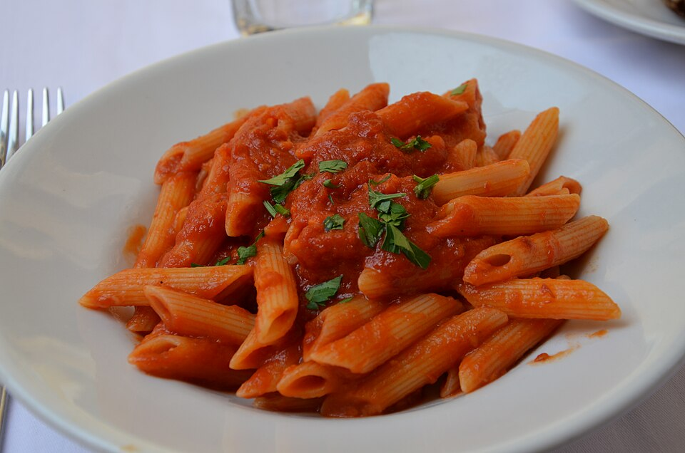

Ricette italiane
Le migliori ricette della penisola
Penne all'arrabbiata

Ingredienti
- 320g Penne rigate
- 1 spicchio Aglio
- q.b. Prezzemolo
- q.b. Sale fino
- 380 g Pomodori pelati
- 3 Peperoncino secco
- q.b. Olio extravergine di oliva
Preparazione
- Per preparare le penne all'arrabbiata iniziate scolando i pelati. Trasferiteli in una ciotola e schiacciateli con una forchetta per spezzettarli.
- A questo punto sbriciolate il peperoncino secco. Mettete sul fuoco una pentola colma d'acqua, salata a piacere, per la cottura della pasta. In una casseruola intanto versate un po' d'olio, unite lo spicchio d'aglio sbucciato.
- Aggiungete anche il peperoncino e lasciate soffriffere dolcemente 8, poi unite i pomodori,
- Date una mescolata e regolate di sale. Poi coprite con un coperchio e lasciate cuocere per circa 12 minuti, mescolando di tanto in tanto.
- Quando il sugo sarà quasi cotto cuocete anche la pasta, al dente, seguendo i tempi di cottura riportati sulla confezione. Trascorsi i 12 minuti togliete il coperchio 14 ed eliminate l'aglio.
- Scolate la pasta e trasferitela direttamente nel sugo; saltatela per un istante e aggiungete dell'acqua di cottura se necessario 18, quindi spegnete.
- Aggiungete il prezzemolo tritato, mescolate un'ultima volta e servite le vostre penne all'arrabbiata ancora calde.